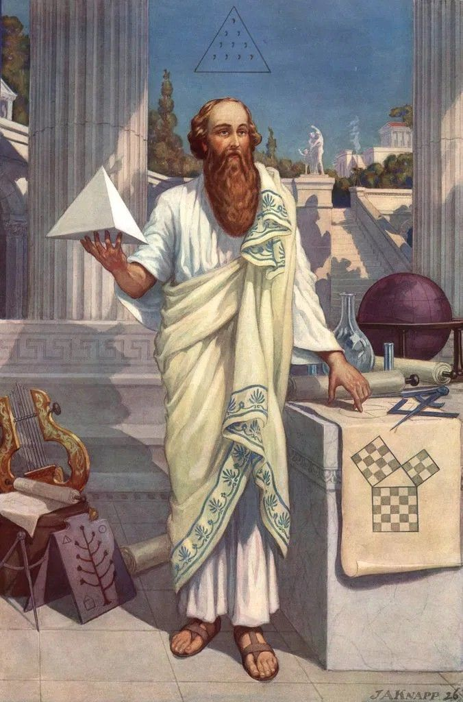
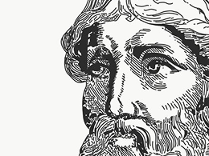
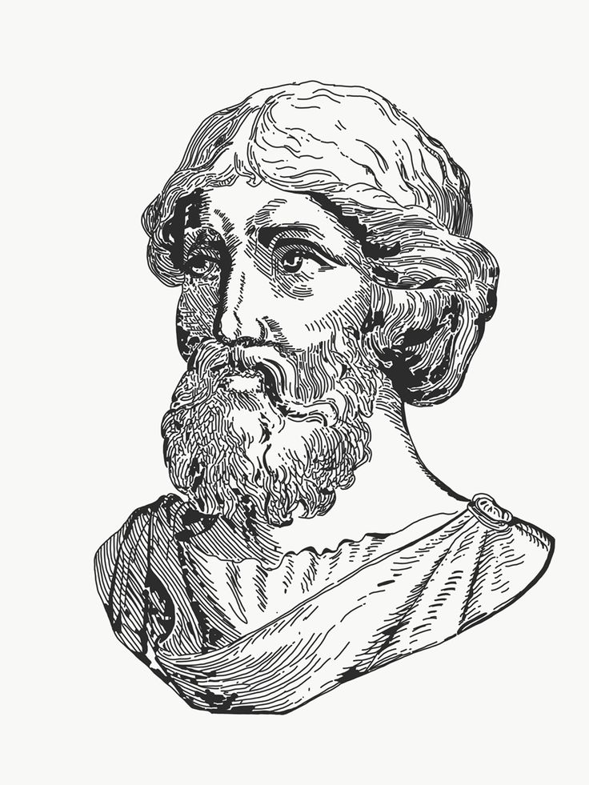
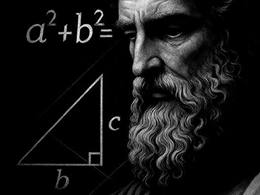
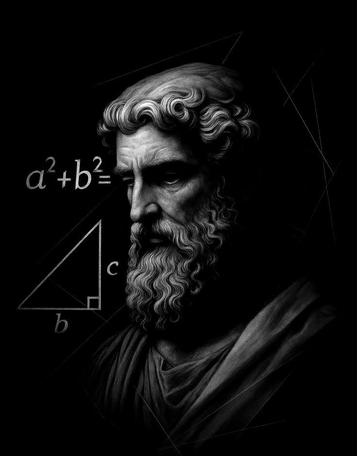
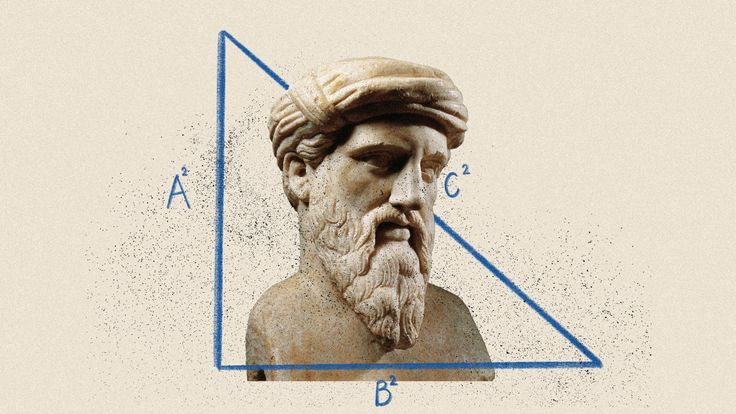
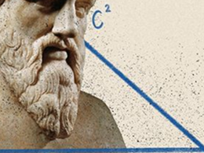
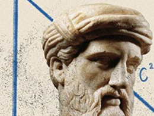

ბიოგრაფია
პითაგორა იყო ძველი ბერძენი მათემატიკოსი და ფილოსოფოსი. იგი დაიბადა დაახლოებით ძვ.წ. VI საუკუნეში, კუნძულ სამოსზე. ახალგაზრდობაში ბევრი იმოგზაურა და სწავლობდა ეგვიპტესა და ბაბილონში, სადაც მიიღო ცოდნა მათემატიკისა და ასტრონომიის შესახებ.



მოღვაწეობა
პითაგორამ დააარსა საკუთარი სკოლა, რომელიც ცნობილია როგორც პითაგორელთა სკოლა. ეს სკოლა არ იყო მხოლოდ საგანმანათლებლო დაწესებულება — იგი წარმოადგენდა ერთგვარ ფილოსოფიურ და მეცნიერულ გაერთიანებას, სადაც რიცხვებს განსაკუთრებული მნიშვნელობა ენიჭებოდა.
მიღწევები
პითაგორა მიიჩნევა მათემატიკაში რიცხვთა თეორიის ერთ-ერთ დამფუძნებლად. მან და მისმა მიმდევრებმა მნიშვნელოვანი წვლილი შეიტანეს გეომეტრიასა და მათემატიკური აზროვნების განვითარებაში.პითაგორამ პირველმა გაუსვა ხაზი რიცხვების მნიშვნელობას სამყაროს აღწერაში. მისი იდეები საფუძვლად დაედო გეომეტრიისა და მათემატიკური ლოგიკის განვითარებას.


თეორემა
პითაგორას თეორემა — მართკუთხა სამკუთხედში ჰიპოტენუზის კვადრატი ტოლია კატეტების კვადრატების ჯამისა. ეს თეორემა გეომეტრიის ერთ-ერთი ფუნდამენტური საფუძველია.
ფაქტები
პითაგორელები თვლიდნენ, რომ „ყველაფერი რიცხვია“ და რიცხვებს არა მხოლოდ მათემატიკური, არამედ სულიერი მნიშვნელობაც ჰქონდათ.


